A Comandante-Geral do Corpo de Bombeiros Militar de Rondônia (CBMRO), Cel BM Daniele Cristina Lima Ferreira, concluiu com sucesso uma agenda institucional de cinco dias em Brasília, participando de 13 reuniões com órgãos federais estratégicos. A missão, realizada entre os dias 06 e 10 de abril, contou com a participação do Chefe da Assessoria Institucional (Cel BM Wândrio Bandeira dos Anjos), da Ajudante de Ordens (Cap BM Ana Paula) e do Assessor Institucional (Ten BM Tiago).
Objetivos Alcançados
A agenda focou em três pilares fundamentais para o fortalecimento do CBMRO: captação de recursos federais, operações integradas e defesa civil, e fortalecimento institucional. Os resultados consolidados demonstram avanços significativos em cada uma dessas frentes.
Captação de Recursos: Crescimento Expressivo
A adoção da Modalidade 90 (execução direta), através do Ministério da Justiça e Segurança Pública, e a utilização de atas centralizadas pela Secretaria Nacional de Segurança Pública (SENASP) viabilizou economias de até 40% em itens como caminhonetes, demonstrando a eficiência do modelo de licitações centralizadas, além de reduzir drasticamente o tempo de entrega de bens, passando de processos que levavam anos para entregas em menos de um ano.
No âmbito do Programa Amazônia Mais Segura (AMAS), o CBMRO busca garantir sua participação no eixo de equipamentos, com foco em aquisições de viaturas e equipamentos específicos para operações na região amazônica.
Operações Integradas: SENASP
As reuniões com órgãos federais estratégicos consolidaram avanços relevantes para a atuação integrada do CBMRO no cenário nacional. Na frente orçamentária, a Secretaria Nacional de Segurança Pública (SENASP) garantiu a recomposição dos recursos para operações como a Operação Verde Rondônia, que haviam sofrido cortes no início do ano. Mais do que a simples recomposição, os recursos poderão ser potencializados, ampliando a capacidade operacional das corporações estaduais.
No âmbito do Programa Amazônia Mais Segura (AMAS), foi esclarecida a estrutura de governança: cada estado conta com um Comitê Executivo Estadual — integrado por Bombeiros, PM, Polícia Civil, PF e PRF — responsável pelo encaminhamento dos planos estaduais a Brasília. O cumprimento desse fluxo é essencial para garantir celeridade na execução de recursos e no pagamento de diárias. Embora o CBMRO já receba apoio para custeio de operações, a participação dos bombeiros no eixo de aquisição de equipamentos do programa permanece limitada.
Por fim, foi apresentado o Projeto RESPAD (Resposta em Ações Integradas para Atuação em Situações de Desastres), desenvolvido pela Coordenadoria Geral de Operações Integradas (CGOI) em parceria com a LIGABOM, com o objetivo de padronizar os protocolos nacionais de atuação em desastres, com base nas lições aprendidas nas inundações do Rio Grande do Sul.
Na reunião com o Diretor da Força Nacional de Segurança Pública, Cel Alencar, a Comandante-Geral solicitou a possibilidade de realização do curso de Instrução de Nivelamento de Conhecimento (INC) da Força Nacional para bombeiros do CBMRO. O pedido foi confirmado pelo Diretor, com previsão de realização para meados de maio de 2026.
Defesa Civil: Articulação e Recursos
A reunião com o Departamento de Preparação e Socorro (DPS) tratou da dupla atuação do CBMRO em Rondônia, que opera simultaneamente como órgão de Segurança Pública e de Defesa Civil, exigindo articulação constante com diferentes ministérios. As demandas de Defesa Civil são tratadas com o Ministério da Integração e Desenvolvimento Regional, enquanto as de Segurança Pública são encaminhadas ao Ministério da Justiça e Segurança Pública (MJSP).
Um dos principais desafios debatidos foi a limitação do Fundo Nacional de Defesa Civil, cujos recursos são destinados quase exclusivamente à resposta a desastres, sem regulamentação para ações preventivas.
Na sequência, a reunião com a Secretaria Nacional de Proteção e Defesa Civil (SEDEC) abordou a reestruturação interna do órgão. O Secretário Wolnei Wolff Barreiros apresentou as principais mudanças: criação de departamento exclusivo para Ajuda Humanitária, fortalecimento do DPS, ampliação das coordenações gerais de três para sete e autorização presidencial para criação de três novos departamentos. O Secretário elogiou a gestão do CBMRO e reafirmou a importância da assessoria institucional em Brasília. Foi destacada ainda a realização do CONGEPDEC nos dias 28 e 29 de abril, reforçando a participação de Rondônia.
Fortalecimento Institucional: Resoluções Estratégicas
Na frente de fortalecimento institucional, foram discutidas e definidas estratégias para resolver demandas críticas da corporação. Um dos temas mais sensíveis foi o litígio fundiário envolvendo a área ocupada pelo CBMRO e a Base Aérea, que possui sobreposição de matrículas entre o Estado e a União.
A agenda também contemplou reunião com a Secretaria Especial de Integração do Estado de Rondônia em Brasília (SIBRA), onde foram alinhadas estratégias de captação de recursos e reafirmada a importância da representação física e ativa do CBMRO na capital federal. O CBMRO planeja retomar uma agenda de visitas diretas às embaixadas de países financiadores do Fundo Amazônia — como Noruega, Suíça e Alemanha — para apresentar a Operação Verde Rondônia e seus resultados expressivos, buscando alternativas de financiamento direto que não dependam exclusivamente do BNDES.
Na frente de proteção ambiental e social, foi apresentado ao Ministério dos Povos Indígenas (MPI) o plano de capacitação de brigadistas indígenas. Para viabilizar a estruturação dessas brigadas com Equipamentos de Proteção Individual (EPIs), sopradores e caminhonetes adaptadas, propôs-se um modelo ágil de financiamento que utiliza atas de registro de preços já vigentes e programas como o Pegasus para o custeio de horas de voo.
No campo da integridade e transparência, a reunião com o IntegriJUSP — Programa de Integridade do Ministério da Justiça e Segurança Pública — apresentou ao CBMRO um modelo estruturado de monitoramento contínuo, com registro das ações no sistema da CGU, permitindo identificar fragilidades e corrigir rotas antes do encerramento dos prazos. Destaque também para o projeto piloto de enfrentamento ao assédio e à discriminação, desenvolvido com mentoria do Ministério da Gestão e Inovação em Serviços Públicos (MGI), que prevê pesquisa interna e ações estruturadas de proteção aos servidores.
Órgãos Federais Envolvidos
Galeria de Fotos
Confira os momentos das reuniões realizadas:
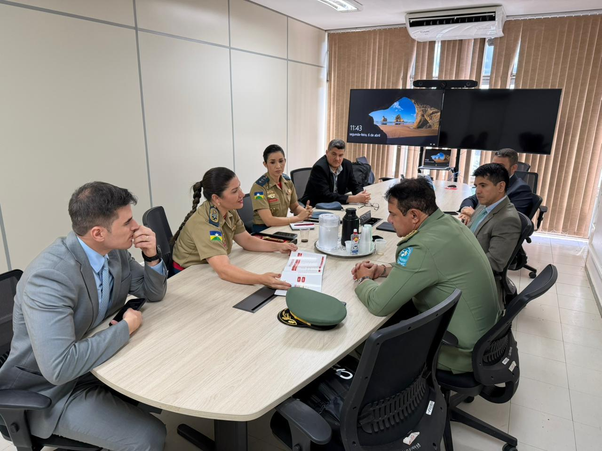
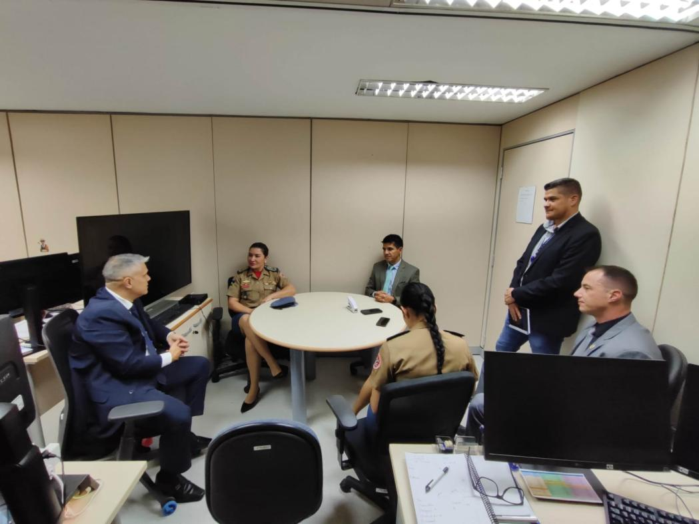
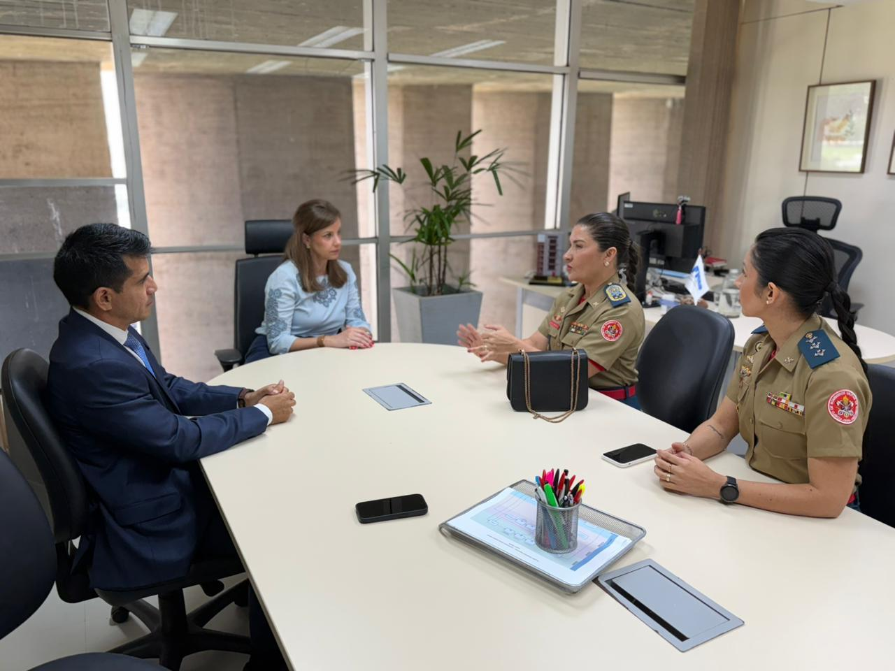
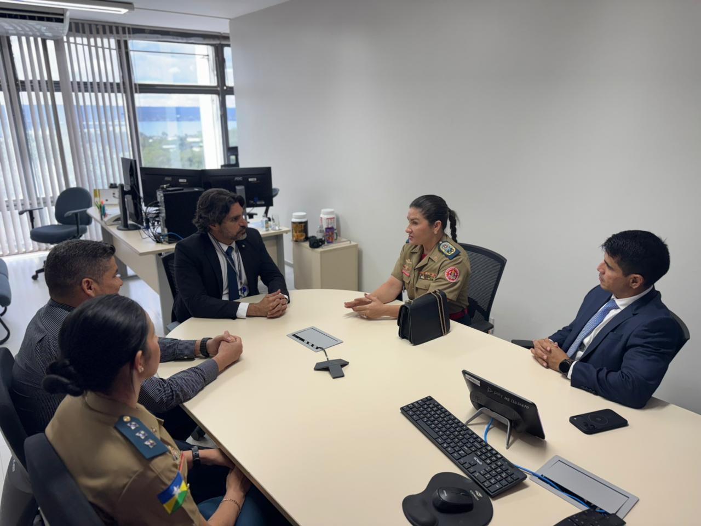
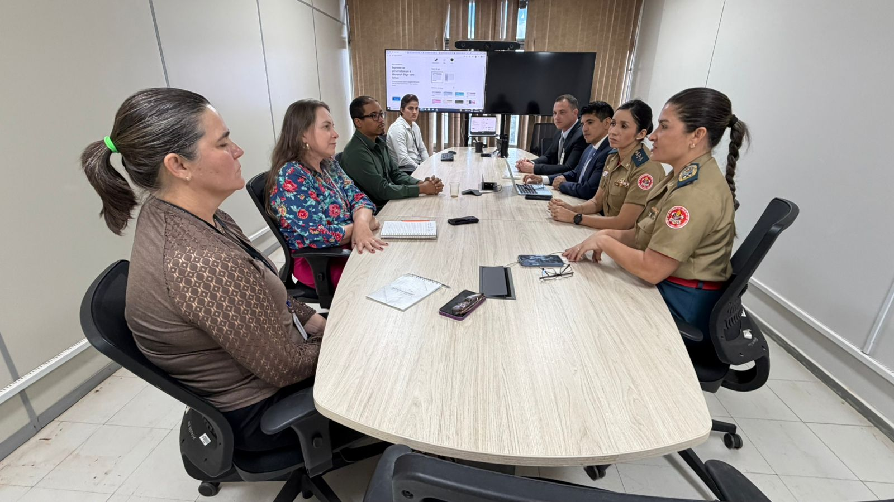
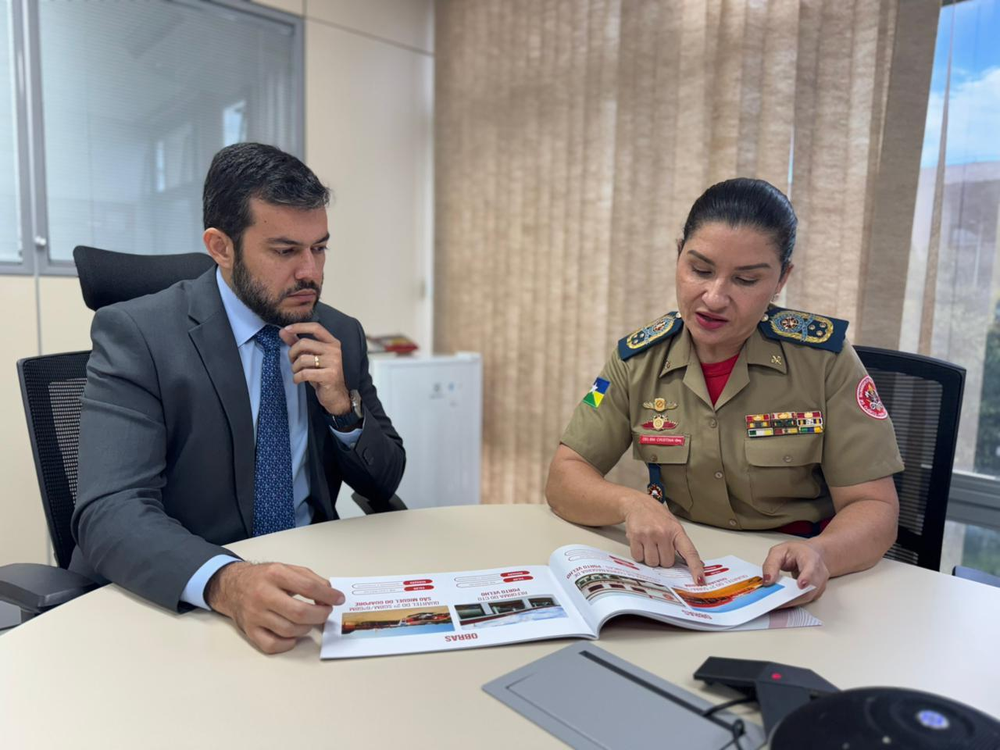
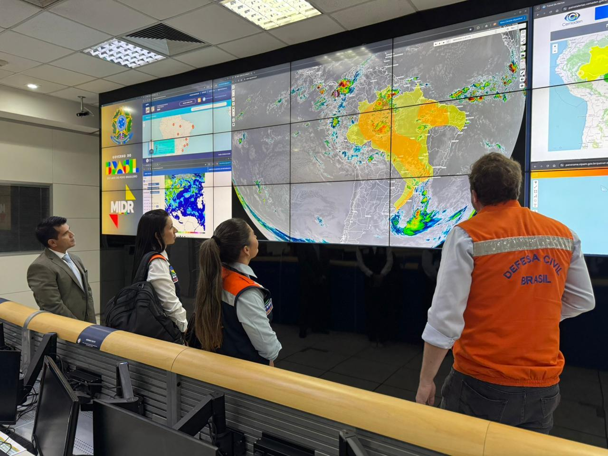
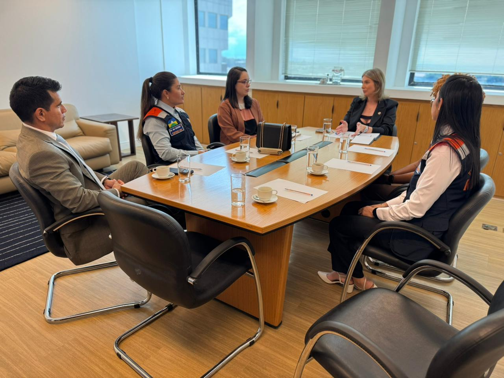
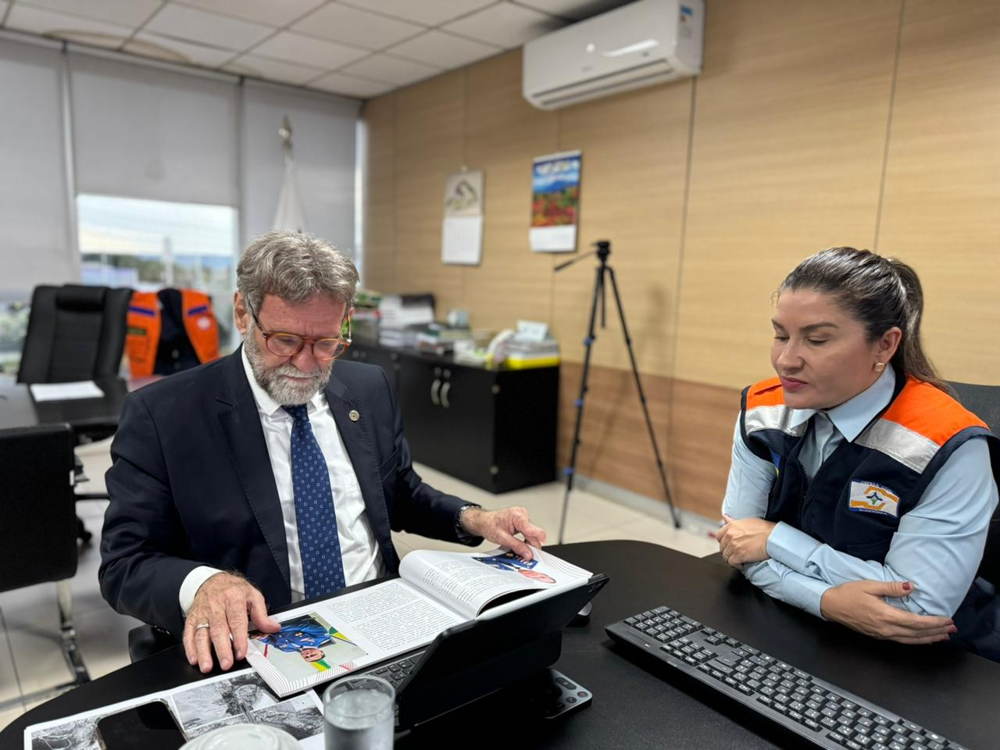
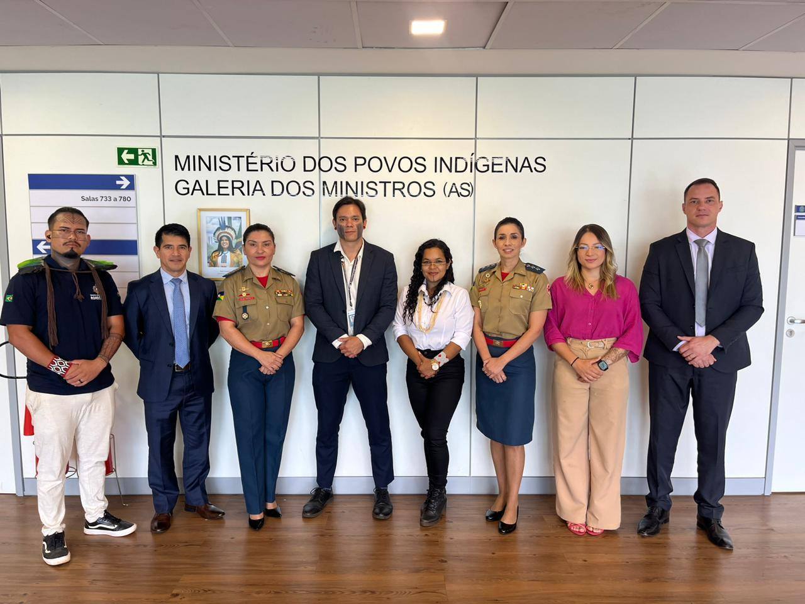
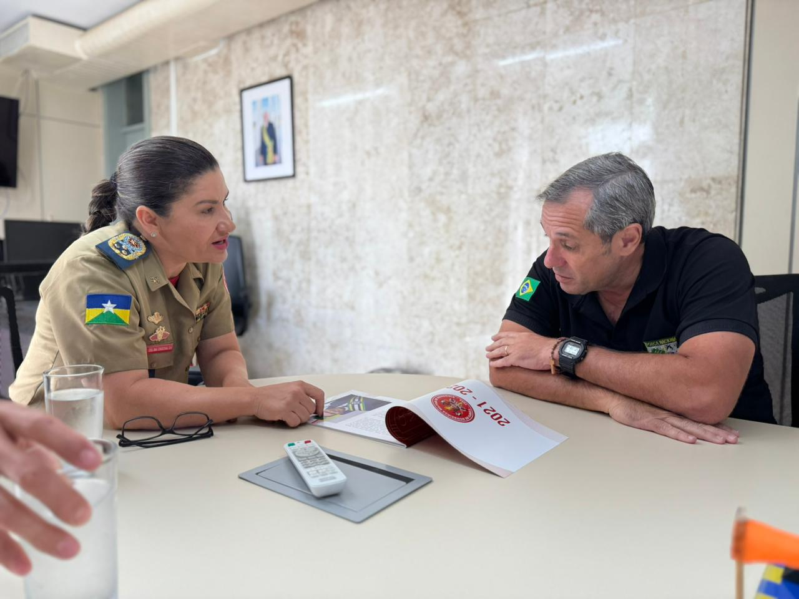
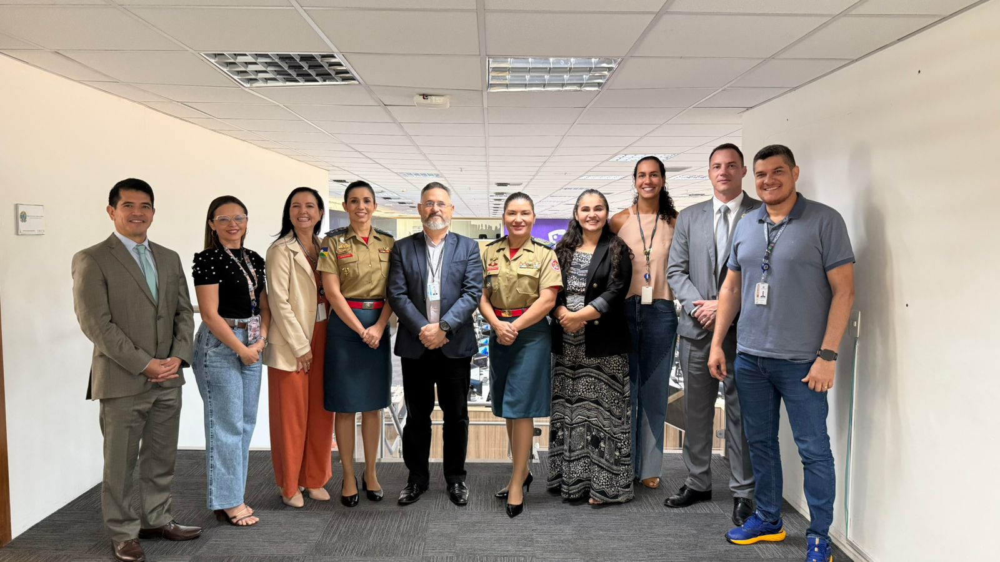
Sobre o CBMRO
O Corpo de Bombeiros Militar de Rondônia (CBMRO) é uma instituição de Segurança Pública e Defesa Civil responsável pela prevenção e combate a incêndios, resgate de pessoas, proteção ambiental e resposta a desastres no estado de Rondônia. Com uma história de dedicação e profissionalismo, o CBMRO segue comprometido com a preservação de vidas e a proteção da população.